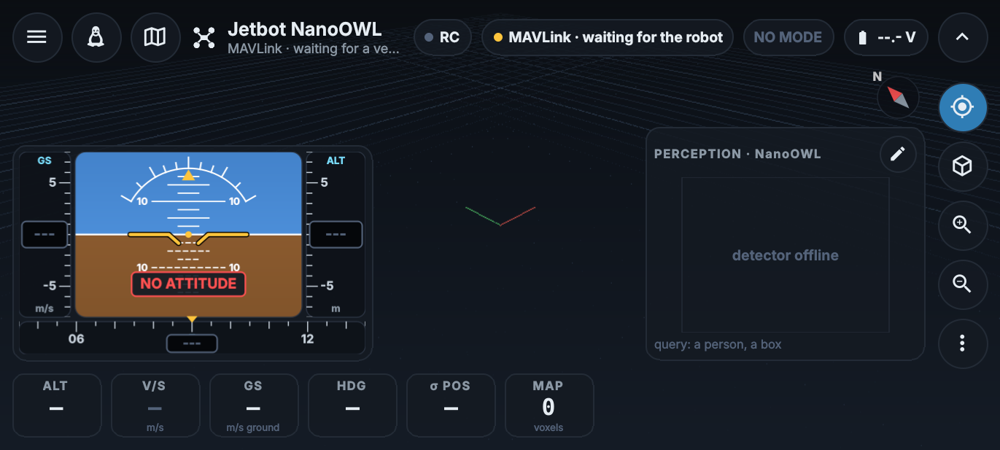
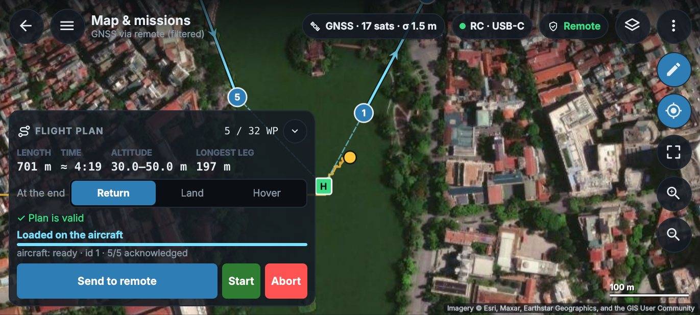
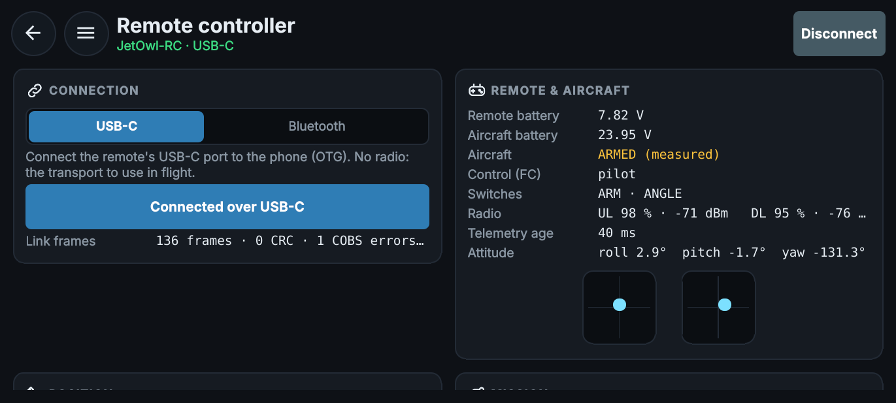
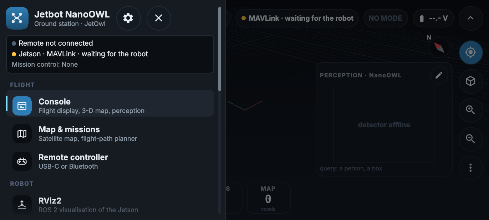
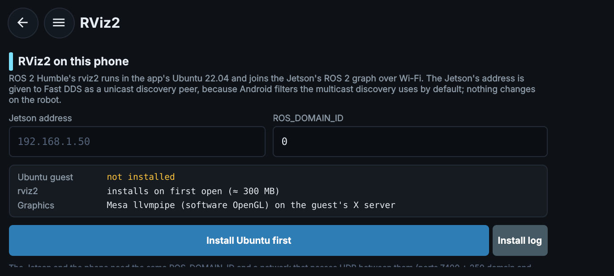
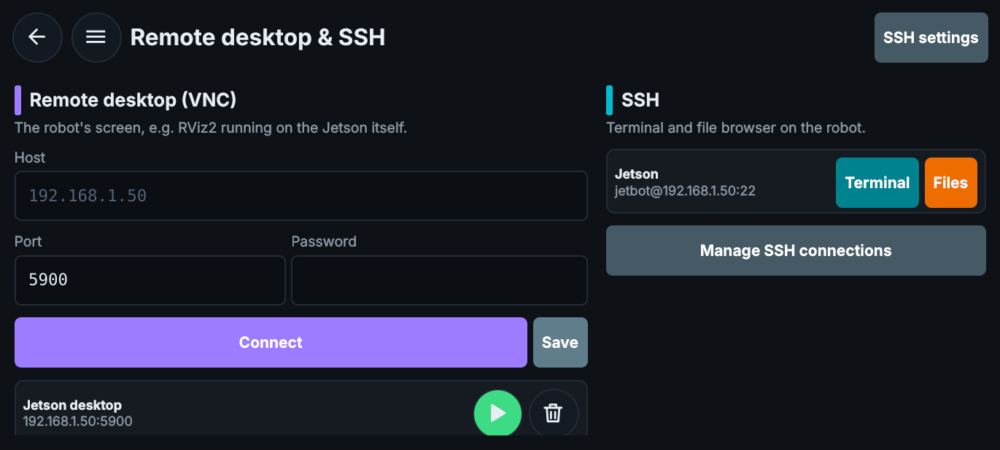
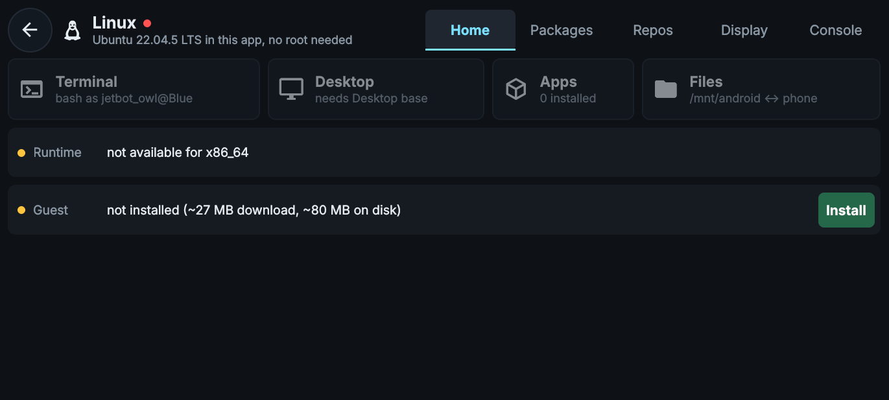

Mobile App¶
JetbotNanoOWL is the Android ground station for the Jetbot / JetOwl robots: flight display, 3-D and satellite maps, mission planning, the Remote UAV link, RViz2, remote desktop and a full Ubuntu on the phone. It lives in its own repository, TNG-Blue/JetbotNanoOWL, pulled in here as the submodule Mobile/Android/JetbotNanoOWL.
-
Qt app — the one to install
C++17 + Qt 6.8 Quick. Satellite map and missions, Remote UAV over USB-C or Bluetooth, RViz2, Linux environment, VNC/SSH. Release
qt-build-N. -
Kotlin app — the original console
Kotlin UI on the original C++ estimation core (JNI), with its own Linux environment. Kept and built alongside. Release
kotlin-build-N.
| Qt | Kotlin | |
|---|---|---|
| Package id | com.tng_blue.jetbotnanoowl.qt | com.tng_blue.jetbotnanoowl |
| Branch | qt | kotlin |
| Satellite map, missions, Remote UAV, RViz2 | ✅ | — |
| Flight display, 2-D/3-D maps, NanoOWL perception | ✅ | ✅ |
| Linux on the phone, VNC / SSH / SFTP | ✅ | ✅ |
Both have different package ids, so they install side by side. Download from the repository's Releases.
Architecture¶
The phone observes and plans; it does not fly. The estimation chain runs in C++ on its own thread; QML only draws. Commands reach the aircraft through the pilot's remote, or — with no remote — directly to the Jetson only after the operator arms it.
flowchart TB
subgraph Phone["📱 Phone — JetbotNanoOWL (Qt)"]
direction TB
UI["QML pages<br/>console · map · remote · RViz2 · Linux"]
CORE["C++ core, 50 Hz thread<br/>filters → EKF → maps"]
ARB{"Command<br/>arbiter"}
SESS["Remote session<br/>phone_link"]
MAV["MAVLink link"]
UI <--> CORE
UI --> ARB
ARB -- "REMOTE" --> SESS
ARB -- "DIRECT" --> MAV
SESS -- "GNSS track KF" --> UI
end
SESS <-- "USB-C CDC / BLE" --> RC["🎮 Remote UAV"]
RC <-- "LoRa" --> FC["✈️ Flight controller"]
MAV <-- "MAVLink v2 · UDP / TLS relay" --> J["🧠 Jetson · ros2_network_bridge"]
FC <-- "micro-ROS" --> JWho commands the aircraft¶
CommandArbiter decides every 50 ms. No timer ever hands control back to the phone: the direct latch clears whenever a remote is heard, and only a new tap by the operator re-arms it.
stateDiagram-v2
[*] --> NONE
NONE --> REMOTE: remote STATUS < 1.5 s old
DIRECT --> REMOTE: remote heard (latch cleared)
REMOTE --> NONE: no STATUS for 1.5 s
NONE --> DIRECT: operator arms it, heartbeat < 3 s
DIRECT --> NONE: heartbeat lost
note right of REMOTE
plans go to the remote;
MAVLink commands closed in the core
end note
note right of DIRECT
MAVLink mission upload,
MISSION_START, RTL
end noteFrom a tap on the map to the aircraft¶
flowchart TD
A["Tap / long-press / drag on the satellite map"] --> B["Waypoints quantised to the<br/>12-byte rflink item"]
B --> C{"Checks on the quantised plan<br/>≤ 32 WP · 0–120 m · legs ≤ 2 km"}
C -- invalid --> A
C -- valid --> D{"Arbiter"}
D -- REMOTE --> E["Send to remote<br/>BEGIN / ITEM / END, CRC-32"]
E --> F["Pilot accepts on the remote"]
F --> G["Uplink → flight controller<br/>items acknowledged"]
G --> H["Pilot starts it on the remote (AUTO)"]
D -- DIRECT --> I["MAVLink mission upload<br/>to the Jetson"]
D -- NONE --> J["Draw and save only"]Details: Remote link · Satellite map · Microcontrollers — mission path.
Feature tour¶
Every screen below is a capture of the current build, rendered at a Galaxy S21 Ultra's landscape size (914 × 411 dp). The Remote and Map captures ran against tools/fake_remote, a stand-in for the Remote UAV on a pseudo-terminal that uses the same phone_link.c as the firmware.














Verification¶
| Suite | What it checks | Result |
|---|---|---|
jetbot_core_tests | Web Mercator and ENU round trips, flight-plan checks on quantised waypoints, GNSS track NIS inside its χ² interval, the remote session's upload and timeout paths, the command arbiter, MAVLink mission frames against pymavlink, filter −3 dB points, EKF unbiasedness, ICP, CRCs | 493 checks, 0 failures |
tst_frontend | flight-plan model and files, DES vs FIPS 46-3, VT100, relay TLS and key pinning, SSH fingerprints, VNC | 19 passed |
tst_linux | RViz2 launcher, archives and .deb, PTY, desktop entries, repositories, DAMAGE/XTEST on a real Xvfb | 30 passed |
| Emulator (Android 14) | the APK starts, QML loads, the bundled OpenSSL is found; the Linux guest boots under PRoot and runs a PTY shell | every pull request |
End to end (desktop + fake_remote) | USB link, session, GNSS track, map, upload with pilot acceptance | 5/5 waypoints acknowledged (above) |
Documents¶
- Qt app — install, use, build, test
- Qt internals & CI — architecture, calibration, pipeline
- Remote link — arbiter, phone_link, GNSS track filter
- Satellite map — projection, plan checks, editing
- Linux environment — guest, display path, runtime
- Estimation design — the chain, derived and proved
- MAVLink link — observer link, delay compensation, relay
- UAV 3-D console — 6-DoF filter, renderer, flight display
- Isaac ROS integration — topics, pose fixes, detections
- Signing & updates — certificates, versionCode
- Kotlin app — the original console